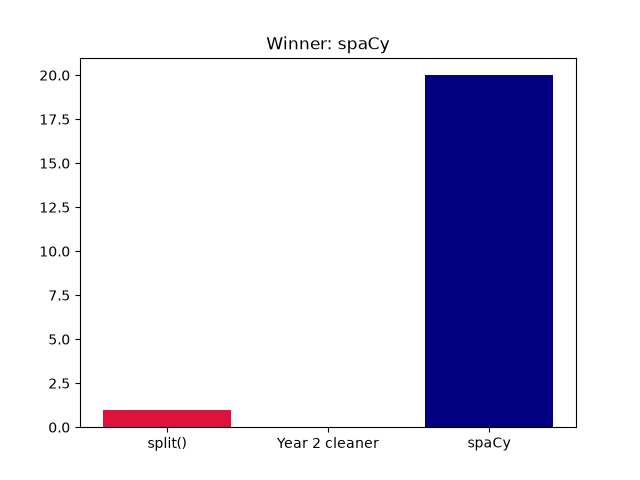
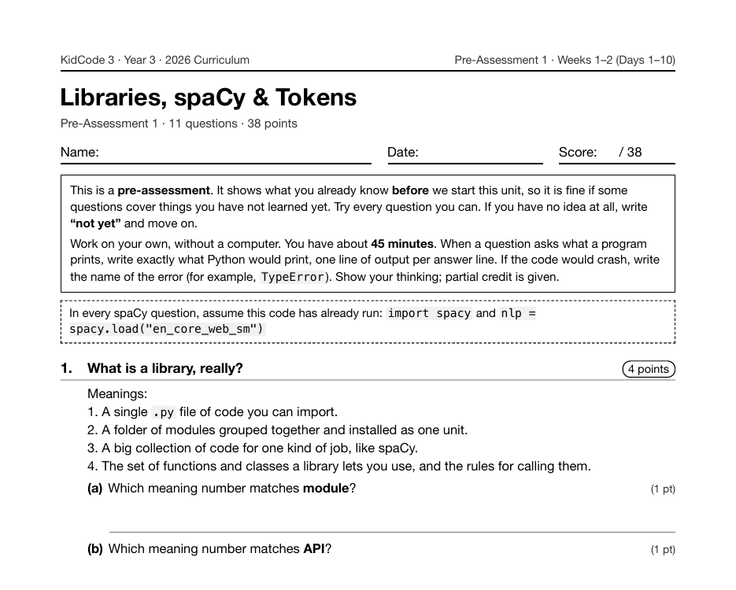

Project 14: Tokenizer Showdown
Tokenizer Showdown is Project 14, on Day 10 of Year 3, the NLP year. After a week on what a token is, token attributes, stop words and lemmas, students test three ways of splitting text on twenty tricky sentences (contractions, abbreviations, URLs, numbers, punctuation): Python's .split(), their own Year 2 cleaning code, and spaCy.
What I taught that week
From the Year 3 curriculum, Week 2: Tokenization
Day 6: Tokenization: Beyond split(). What a token is. Comparing text.split() with spaCy's tokens on punctuation, contractions (don't becomes do and n't), URLs, and numbers. A tokenizer-only pipeline with spacy.blank("en").
Day 7: Token Attributes. token.text, token.is_alpha, token.is_punct, token.is_digit, token.like_num, and token.like_url. Indexing and slicing a Doc with doc[0] and doc[1:4]. Lab: "Token Sorter".
Day 8: Stop Words & Text Cleaning. token.is_stop, token.lower_, and filtering tokens with list comprehensions. Building a cleaning recipe that lowercases text and drops punctuation and stop words. Practice: "Clean-Up Crew".
Day 9: Lemmas & Normalization. token.lemma_: how "running", "ran", and "runs" all become "run". Why the trained model is needed for lemmas, and how normalization makes counting fairer. Practice: "Word Family Finder".
Day 10: Lab: Tokenizer Showdown. Project 1. Testing .split(), Year 2's cleaning code, and spaCy on twenty tricky sentences, scoring each on contractions, abbreviations, and punctuation, and charting the results.
What students built
92 students ran the showdown. Every one uses spacy.blank("en"), a tokenizer-only pipeline, and charts the results. The program shown here scored .split() at 1 of 20, its own Year 2 cleaner at 0 of 20, and spaCy at 20 of 20.
One student's program
This is one real submission, shown as the student wrote it apart from the removed name header. It was chosen by a fixed rule rather than for being the best: it is the submission closest to the project's median length among those that ran cleanly and contain nothing that could identify anyone. Parts are skipped where marked with …
def split_tokenizer(text):
return text.split()
def cleaning_tokenizer(text):
text = text.lower()
for mark in string.punctuation:
text = text.replace(mark, "")
return text.split()
def spacy_tokenizer(text):
return [token.text for token in nlp(text)]
def passes(tokens, case):
lowered = [t.lower() for t in tokens]
for wanted in case["expect"]:
if wanted.lower() not in lowered:
return False
for bad in case["forbid"]:
if bad.lower() in lowered:
return False
return True
…
class TokenizerTester:
def __init__(self, cases):
self.cases = cases
self.rows = []
def run(self, tokenizers):
for case in self.cases:
row = {"sentence": case["text"], "category": case["category"]}
for name, tokenizer in tokenizers.items():
row[name] = passes(tokenizer(case["text"]), case)
self.rows.append(row)
def score(self, name):
return sum(1 for row in self.rows if row[name])
def save_csv(self, filename):
with open(filename, "w", newline="") as f:
writer = csv.DictWriter(f, fieldnames=list(self.rows[0].keys()))
writer.writeheader()
writer.writerows(self.rows)
tester = TokenizerTester(TEST_CASES)
tester.run(TOKENIZERS)
tester.save_csv("showdown_results.csv")
names = list(TOKENIZERS)
for name in names:
print(f"{name}: {tester.score(name)} of {len(tester.rows)}")
best = max(names, key=tester.score)
print("Winner:", best)
A sample run of that program (the input was typed for this page)
split(): 1 of 20 Year 2 cleaner: 0 of 20 spaCy: 20 of 20 Winner: spaCy

The worksheet for this unit
Each unit has a pre- and post-assessment written from the same curriculum. This is the first page of the pre-assessment for the unit this project sits in: Libraries, spaCy & Tokens (Weeks 1–2 (Days 1–10), 11 questions).

Where it fits
From here on, every Year 3 program starts by handing text to spaCy. The next project, Keyword Detective, redoes Book Detective's word counts on lemmas instead of raw words.
Looking back
I like that Year 3 opens by scoring the students' own Year 2 code rather than a strawman. Losing to spaCy on their own test sentences is a better argument for learning a library than anything I could say about it.